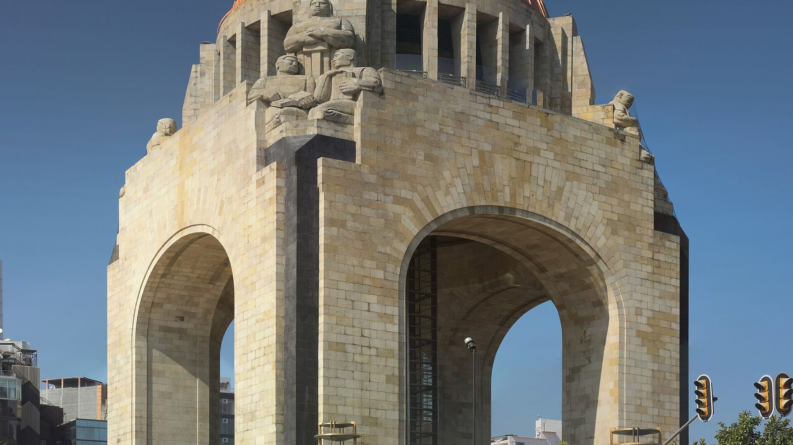

The parliament that never was
Porfirio Díaz commissioned a Legislative Palace from French architect Émile Bénard. Work had barely begun when the Revolution broke out in 1910, and the steel skeleton of its dome stood abandoned for years.
It started as the dome of a grand parliament for Porfirio Díaz, was abandoned when the Revolution broke out, and became the Revolution's monument. Here's what you're looking at.

Porfirio Díaz commissioned a Legislative Palace from French architect Émile Bénard. Work had barely begun when the Revolution broke out in 1910, and the steel skeleton of its dome stood abandoned for years.
Carlos Obregón Santacilia turned the dome into a monument completed in 1938. Its pillars hold the remains of Madero, Carranza, Villa, Calles and Cárdenas.
A glass elevator rises through the center of the monument to a lookout under the dome, with views along Paseo de la Reforma.
Yes, a glass elevator takes visitors to a lookout under the dome.
Francisco I. Madero, Venustiano Carranza, Francisco Villa, Plutarco Elías Calles and Lázaro Cárdenas.
It reused the abandoned structure of Porfirio Díaz's Legislative Palace to honor the Revolution.